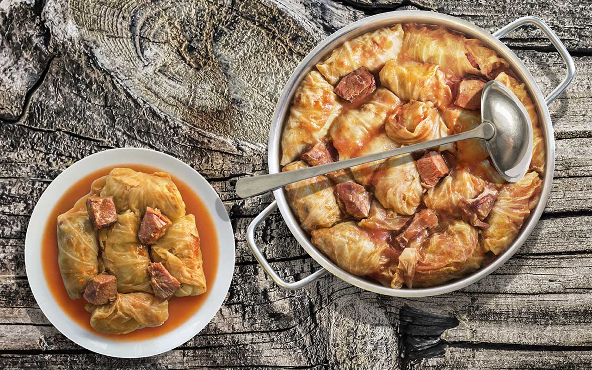

Food and Drinks in SerbiaSerbian cuisine offers an enormous range of dishes and is a well-balanced blend of eastern, central European, and regional Balkan cuisines. Apart from eating in restaurants and kafanas (a type of tavern), Serbs frequently consume fast food, particularly grilled cuisine for lunch and pastries for all other meals. Here are some of the most popular dishes:Meats
Ćevapi (or ćevapčići) are miniature grilled sausage-like chunks of minced meat. Serbian "evapi" are either made of beef, lamb, pig, or a combination of these.They are frequently served with chopped onions, sour cream, kajmak, ajvar, cottage cheese, minced red pepper, and salt, and are typically served in groups of 5 to 10 on a plate or on a flatbread (lepinje or somun).
Pljeskavica is a popular patty dish, second only to ćevapćići.It is frequently served with urnebes mixed spicy sauce, ajvar sauce of peppers, and kajmak milk cream. One of Serbia's most well-known dishes is Leskovaka pljeskavica, which is often prepared of beef or pork, is quite spicy, and is eaten with onions. However, there are a variety of various methods to serve it, including arska and Hajduka. Arska pleskavica is packed with kashkaval cheese and made with meat. The meat for Hajduka pljeskavica is a mixture of beef and smoked pork. Pljeskavica has recently become more well-known in Europe and is now available in a select number of fast food outlets in countries like Germany, Sweden, and Austria.
BEČKA ŠNICLA, a typical Austrian meal, is created with boneless beef that has been thinned with a hammer (prepared like an escalope), then breaded and fried.Although there are variations everywhere in the world, it is a well-known component of German and Austrian cuisine. In Austria, a lemon slice and either potato salad or potatoes with parsley and butter are typically used to garnish the dish known as Wiener Schnitzel (Viennese schnitzel).The dish is known as beka nicla (Viennese schnitzel) in Serbia. Nobody knows why the meal originated in Serbia rather than Italy, according to a local urban legend. Peenje occasionally has a lot of grease, especially when it's served cold, which happens frequently. Soups, stews and other “spoon” dishes
Sarma is essentially ground meat and rice wrapped with grapevine, cabbage, or other greens. The cabbage sarma is the most well-liked dish in Serbia. While some enjoy it with pavlaka (sour cream), others prefer it with garlic.
Try the classic Riblja orba or Riblji paprika (fish stew with tomato juice and paprika) if you're in a seafood restaurant by the river. This meal appeals to even those who don't particularly like fish.
Punjene paprike (stuffed paprikas) is a meal created from paprika that has been filled with a mixture of rice and meat in a tomato sauce. The components include green or red bell peppers, eggs, spices, salt, tomato, rice, and minced beef.
Škembići (Tripe soup) comes in a wide range of variations in Eastern European food. One of the earliest known foods in Serbia is kembii, which dates back to the 13th century. Kembii, which is served with boiling potatoes, is tripe in a vegetable stew with herbs. Pastry
Gibanica is a traditional cheese pie from Serbia. It is formed of layers of thin dough with cheese and typically has an egg poured over it. It is one of the most recognizable forms of Serbian pastries.
Burek is a group of Ottoman-style baked or fried filled pastries produced from the thin, flaky dough known as yufka (or phyllo). It can have cheese, minced beef, or mushrooms as its filling. There are also some contemporary variants that are cherry-filled instead of having any fill.
Proja is a cornbread-based dish popular in Serbia. It was once popular during periods of extreme poverty, primarily before to the 1950s, but is now a typical regular dinner. It is frequently confused with projara, a fancier version of proja. Salad and Appetizers
The only difference between these two types of salad is the addition of cheese or cucumber. Asking the waiter what it has would be better because there are various interpretations. It consists primarily of tomato, onion, paprika, cucumber, and hard white cheese.
Ajvar can be eaten as a salad, a side dish, or a bread spread. Red bell peppers make up the majority of it, along with eggplant, garlic, and chili pepper. Ajvar, which is originally from Serbia, was for a long time known as "Serbian salad" or "Serbian vegetable caviar". After World War II, it gained popularity as a salad (side dish) throughout Yugoslavia, and it is still popular in the Balkans today. While some commercial makers use cooked peppers, which results in a lower-quality product, authentic homemade ajvar is prepared from roasted peppers. It can be sweet, piquant (the most typical), or very fiery depending on the number of chili peppers added and the amount of capsaicin in the bell peppers.
Urnebes (translation: chaos, disorder)is a style of salad popular in the city of Ni and southern Serbia that is typical of Serbian cuisine. With salt and other seasonings, it is made of cheese and fiery chili peppers.
It is made using chopped peppers in Southern Serbia, which is probably where it originated, while other places use ground dry peppers (aleva), which give food a red hue. Urnebes range in heat from mild to highly hot depending on the type and quantity of peppers used. It is typically served with barbecue as a side dish. Garlic is occasionally used.
A creamy dairy delicacy called aмак, which is frequently served with flatbreads such evapii, pljeskavica, and prenice, is comparable to clotted cream. Popular Serbian drinks:
Rakija a potent brandy made primarily from plums (ljivovica), apricots (kajsijevaa), quinces (dunjevaa), and pears (vilijamovkaa), is the most popular beverage in Serbia. Additional versions include cherry, therapeutic herbs (Stomaklija), and honey (Medovaa). Typically, the alcohol concentration ranges from 30% to 40%, however some private distillers reach up to 50%.
Wormwood (pelin) is the base of the bitter liqueur known as pelinkovac. The volume alcohol concentration ranges from 28% to 35%. It tastes extremely harsh and is comparable to Jägermeister.
Numerous breweries in Serbia produce a wide variety of domestic and foreign alcoholic beverages, including well-liked selections like Jelen (Deer) and Lav (Lion). Furthermore, Serbia is home to five significant wine areas, including Fruka Gora, Vrac, Oplenac, Smederevo, and Upa, which are renowned for their outstanding Bermet, Riesling, Merlot, Pinot, Chardonnay, and Cabernet Sauvignon wines. |